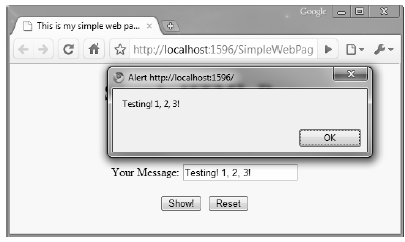

In addition to HTML UI elements, a given *.htm file may contain blocks of script code that will be processed by the requesting browser. There are two major reasons why client-side scripting is used:
Regarding the first point, understand that the inherent evil of a web application is the need to make frequent round-trips (termed postbacks) to the server machine to update the HTML to be rendered into the browser. While postbacks are unavoidable, you should always be mindful of ways to minimize travel across the wire. One technique that saves postbacks is to use client-side scripting to validate user input before submitting the form data to the web server. If an error is found, such as not supplying data within a required field, you can alert the user to the error without incurring the cost of posting back to the web server. (After all, nothing is more annoying to users than posting back on a slow connection, only to receive instructions to address input errors!)
Note Be aware that even when performing client-side validation (for improved response time), validation should also occur on the web server itself. This will ensure that the data has not been tampered with as it was sent across the wire. The ASP.NET validation controls will automatically perform client- and server-side validation (more on this in the following chapter).
Client-side scripts can also be used to interact with the underlying object model (the Document Object Model or DOM) of the web browser itself. Most commercial browsers expose a set of objects that can be leveraged to control how the browser should behave.
When a browser parses an HTML page, it builds an object tree in memory, representing all the contents of the Web page (forms, input controls, etc). Browsers provide an API called DOM that exposes the object tree and allows you to modify its contents programmatically. For example, you can write JavaScript that executes in the browser to get the values from specific controls, change the color of a control, add new controls to the page dynamically, etc.
One major annoyance is the fact that different browsers tend to expose similar, but not identical, object models. Thus, if you emit a block of client-side script code that interacts with the DOM, it may not work identically on all browsers (thus, testing is always a must!).
ASP.NET provides the HttpRequest.Browser property, which allows you to determine at runtime the capacities of the browser and device that sent the current request. You can use this information to stylize how to emit back the HTTP response in the most optimal manner. But you rarely need to worry about this, unless you are implementing custom controls, because all the standard Web controls in ASP.NET automatically know how to render themselves appropriately based on the browser type. This remarkable capability is known as adaptive rendering, and it’s implemented out-of-the-box for all standard ASP.NET controls.
There are many scripting languages that can be used to author client-side script code. Two of the more popular ones are VBScript and JavaScript. VBScript is a subset of the Visual Basic 6.0 programming language. Be aware that Microsoft Internet Explorer is the only web browser that has built-in support for client-side VBScript support (other browsers may or may not provide optional plug-ins). Note that if you wish your HTML pages to work correctly in any commercial web browser, do not use VBScript for your client-side scripting logic.
The other popular scripting language is JavaScript. It’s important to note that JavaScript is in no way, shape, or form the same as the Java language. While JavaScript and Java have a somewhat similar syntax, JavaScript is not a full-fledged OOP language, and thus it is far less powerful than Java. The good news is that all modern-day web browsers support JavaScript, which makes it a natural candidate for client-side scripting logic.
To illustrate the role of client-side scripting, let’s first examine how to intercept events sent from clientside HTML GUI widgets. To capture the Click event for the Show button, select btnShow from the upperleft drop-down list of the HTML form designer and select the onclick event from the right drop-down list. This will add an onclick attribute to the definition of the Show button:
<input id="btnShow" type="button" value="Show!" onclick="return btnShow_onclick()" />
Visual Studio 2010 will also create an empty JavaScript function that will be called when the user clicks the button. Within this stub, use the alert() method to display a client-side message box containing the value in the text box via the value property:
<script language="javascript" type="text/javascript"> // <![CDATA[ function btnShow_onclick() { alert(txtUserMessage.value); } // ]]> </script>
Note that the scripting block has been wrapped within a CDATA section. The reason for this is simple. If your page ends up on a browser that does not support JavaScript, the code will be treated as a comment block and ignored. Of course, your page may be less functional, but the upside is that your page will not blow up when rendered by the browser.
In any case, if you view your page in a browser once again, you should be able to type a message and see it pop up in a client side message box (Figure 32-7).
Figure 32-7 Invoking a client side JavaScript function
As well, when you click on the Reset button, you should find that the text area is cleared of data, as this particular button has been created by specifying type="reset".